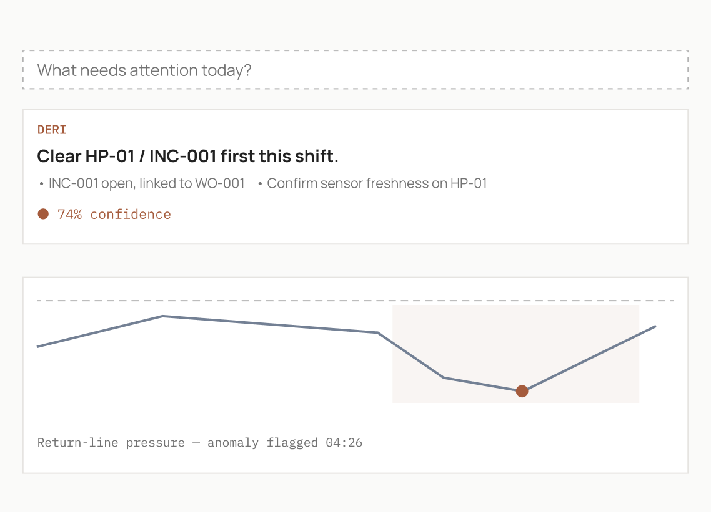
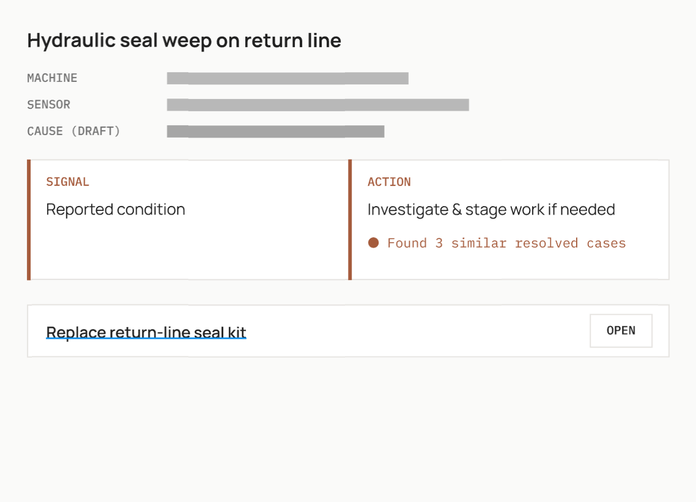
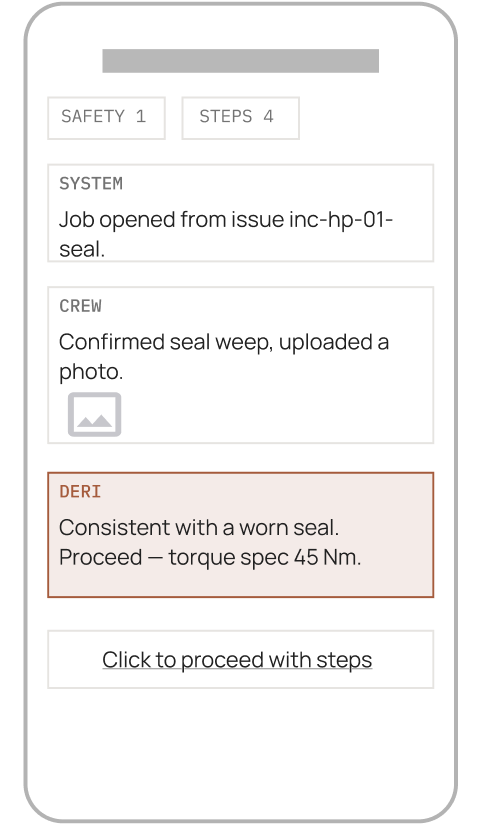
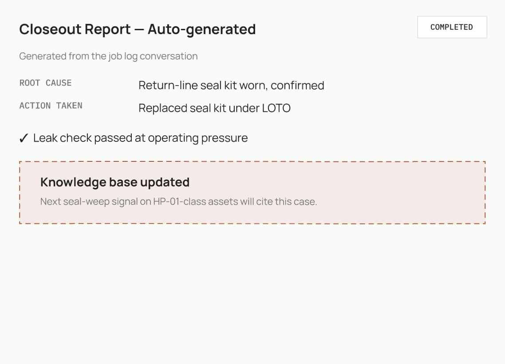

Early-warning lead time increase
How early an emerging issue is detected before an intervention or failure.
The AI reliability engineer for factories.
How Deri works
Deri connects live equipment data with manuals, work orders, and past incidents, helping teams detect issues earlier and recover faster.

Catch emerging issues and shifting equipment behavior early,
then route them to the right person.

Pull together live signals, operational context, and past incidents to rank likely causes.

Show technicians the procedures and next steps needed to restore production.

Document the fix and add it to the equipment's history for the next response.
How Deri works — zigzag compare
Same steps as above, laid out in alternating rows for side-by-side comparison.
Catch emerging issues and shifting equipment behavior early,
then route them to the right person.
Pull together live signals, operational context, and past incidents to rank likely causes.
Show technicians the procedures and next steps needed to restore production.
Document the fix and add it to the equipment's history for the next response.
Deployment
Start narrow, connect what you need, and expand after it proves value.
Existing factory systems
Deri
Deploy
Read-only by default. Customer-defined access and approvals.
Your operations
Operational outcomes
Deri establishes a baseline for your workflow and tracks the metrics that matter.
How early an emerging issue is detected before an intervention or failure.
Time from the first alert to a likely cause and recommended next action.
Time from an equipment incident to restored production.
Total production time lost across the selected equipment or workflow.